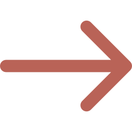

Деректер зерттеуден алынды Қазақстан статистика жөніндегі комитетінің " Қазақстандағы әйелдерге қатысты зорлық-зомбылық бойынша іріктеп зерттеу.
Информация откоррекированна под сайт.
Әйелдердің 17%-ы (18-75 жас) серіктестері тарапынан физикалық және/немесе жыныстық зорлық-зомбылық көрген.
Әйелдердің 21%-ы (18-75 жас) жыныстық серіктестері тарапынан психологиялық зорлық-зомбылық көрген.
Бұл республикадағы әрбір бесінші әйел.
Кез-келген физикалық, жыныстық немесе психологиялық зорлық-зомбылықты бастан кешірген әйелдердің төрттен бір бөлігі (24%) жыныстық серіктестері тарапынан зорлық-зомбылықтың барлық үш түрін көрген.
Әйелдердің 33%-ы (18-75 жас) өмірлерінде кем дегенде бір рет жыныстық серіктестері тарапынан бақылаушы мінез-құлықтарын байқаған.
Бұл республикадағы әрбір үшінші әйел.
Жыныстық серіктесі тарапынан зорлық-зомбылық көрген әйелдердің 50%-ы зорлық-зомбылықтың жұмсақ түрінен гөрі қатыгез түрлерін айтқан.
Аналарына зорлық-зомбылық жасалғанын естеріне түсірген әйелдер өздерінің өмір бойы серіктестері тарапынан физикалық және/немесе жыныстық зорлық-зомбылыққа ұшырағандары туралы мәлімдеді.
Физикалық зорлық-зомбылық - бұл физикалық күш қолдану және физикалық ауырсыну арқылы денсаулыққа зиян келтіру.
Читать далее Психологиялық зорлық-зомбылық - бұл адамның эмоцияларына немесе психикасына әсер ету нысаны. Бұл психологиялық жарақатқа, соның ішінде депрессия мен күйзеліске әкелетін зорлық-зомбылық түрі.
Читать далееЖыныстық зорлық-зомбылық - бұл кез келген мәжбүрлі жыныстық әрекет немесе басқа адамның жыныстық сипатын пайдалану.
Читать далееЭкономикалық зорлық-зомбылық - бұл бір адамның екінші біреудің ақшасын және басқа да материалдық қорларын пайдалануын бақылау.
Читать далееСіздің серіктесіңіз агрессивті және қорлау әрекеттерін жасайды. Бұл серіктесіңіздің “бұл жерде кім басшы екенін” көрсеткісі келетін тактикасы.
Сіздің серіктесіңіз өзін кінәлі сезінеді, бірақ өз әрекеті үшін емес. Ол өз қылықтары үшін ұсталып, жазаланудан қорқады.
Сіздің серіктесіңіз өз әрекетін оңтайландырады. Адам жауапкершіліктен қашып құтылу үшін ақталып немесе сізді айыптауы мүмкін.
Сіз тұрмыстық зорлық-зомбылық туралы арыз жазасыз;
Полиция әкімшілік құқық бұзушылық белгілерін қарастырады:
Анықталған жағдайда әкімшілік материал жиналады.
Учаскелік инспектор оны мамандырылған ауданаралық әкімшілік сотына жібереді.
Ескеретін жайт: зорлық-зомбылық туралы мәлімдеме жеке және заңды тұлға тарапынан шығуы мүмкін
Отбасындағы зорлық-зомбылық көрінісіне куә болған немесе үйдегі зорлық-зомбылық туралы сигнал алған учаскелік полиция қызметкері де арыз бере алады
Бұл блокта сіз анонимді түрде бастан кешкен оқиғаңызды жібере аласыз және модерациядан кейін олар жарияланады.